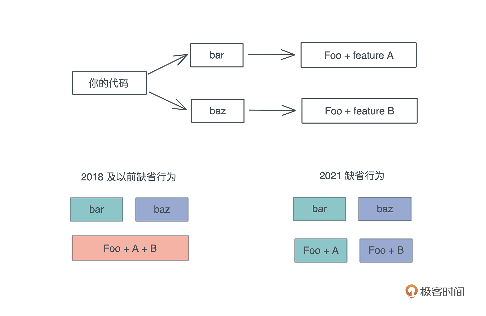

- 00 开篇词 让Rust成为你的下一门主力语言.md.html
- 01 内存：值放堆上还是放栈上，这是一个问题.md.html
- 02 串讲：编程开发中，那些你需要掌握的基本概念.md.html
- 03 初窥门径：从你的第一个Rust程序开始！.md.html
- 04 get hands dirty：来写个实用的CLI小工具.md.html
- 05 get hands dirty：做一个图片服务器有多难？.md.html
- 06 get hands dirty：SQL查询工具怎么一鱼多吃？.md.html
- 07 所有权：值的生杀大权到底在谁手上？.md.html
- 08 所有权：值的借用是如何工作的？.md.html
- 09 所有权：一个值可以有多个所有者么？.md.html
- 10 生命周期：你创建的值究竟能活多久？.md.html
- 11 内存管理：从创建到消亡，值都经历了什么？.md.html
- 12 类型系统：Rust的类型系统有什么特点？.md.html
- 13 类型系统：如何使用trait来定义接口？.md.html
- 14 类型系统：有哪些必须掌握的trait？.md.html
- 15 数据结构：这些浓眉大眼的结构竟然都是智能指针？.md.html
- 16 数据结构：Vec_T_、&[T]、Box_[T]_ ，你真的了解集合容器么？.md.html
- 17 数据结构：软件系统核心部件哈希表，内存如何布局？.md.html
- 18 错误处理：为什么Rust的错误处理与众不同？.md.html
- 19 闭包：FnOnce、FnMut和Fn，为什么有这么多类型？.md.html
- 20 4 Steps ：如何更好地阅读Rust源码？.md.html
- 21 阶段实操（1）：构建一个简单的KV server-基本流程.md.html
- 22 阶段实操（2）：构建一个简单的KV server-基本流程.md.html
- 23 类型系统：如何在实战中使用泛型编程？.md.html
- 24 类型系统：如何在实战中使用trait object？.md.html
- 25 类型系统：如何围绕trait来设计和架构系统？.md.html
- 26 阶段实操（3）：构建一个简单的KV server-高级trait技巧.md.html
- 27 生态系统：有哪些常有的Rust库可以为我所用？.md.html
- 28 网络开发（上）：如何使用Rust处理网络请求？.md.html
- 29 网络开发（下）：如何使用Rust处理网络请求？.md.html
- 30 Unsafe Rust：如何用C++的方式打开Rust？.md.html
- 31 FFI：Rust如何和你的语言架起沟通桥梁？.md.html
- 32 实操项目：使用PyO3开发Python3模块.md.html
- 33 并发处理（上）：从atomics到Channel，Rust都提供了什么工具？.md.html
- 34 并发处理（下）：从atomics到Channel，Rust都提供了什么工具？.md.html
- 35 实操项目：如何实现一个基本的MPSC channel？.md.html
- 36 阶段实操（4）：构建一个简单的KV server-网络处理.md.html
- 37 阶段实操（5）：构建一个简单的KV server-网络安全.md.html
- 38 异步处理：Future是什么？它和async_await是什么关系？.md.html
- 39 异步处理：async_await内部是怎么实现的？.md.html
- 40 异步处理：如何处理异步IO？.md.html
- 41 阶段实操（6）：构建一个简单的KV server-异步处理.md.html
- 42 阶段实操（7）：构建一个简单的KV server-如何做大的重构？.md.html
- 43 生产环境：真实世界下的一个Rust项目包含哪些要素？.md.html
- 44 数据处理：应用程序和数据如何打交道？.md.html
- 45 阶段实操（8）：构建一个简单的KV server-配置_测试_监控_CI_CD.md.html
- 46 软件架构：如何用Rust架构复杂系统？.md.html
- 加餐 Rust2021版次问世了！.md.html
- 加餐 代码即数据：为什么我们需要宏编程能力？.md.html
- 加餐 宏编程（上）：用最“笨”的方式撰写宏.md.html
- 加餐 宏编程（下）：用 syn_quote 优雅地构建宏.md.html
- 加餐 愚昧之巅：你的Rust学习常见问题汇总.md.html
- 加餐 期中测试：参考实现讲解.md.html
- 加餐 期中测试：来写一个简单的grep命令行.md.html
- 加餐 这个专栏你可以怎么学，以及Rust是否值得学？.md.html
- 大咖助场 开悟之坡（上）：Rust的现状、机遇与挑战.md.html
- 大咖助场 开悟之坡（下）：Rust的现状、机遇与挑战.md.html
- 特别策划 学习锦囊（一）：听听课代表们怎么说.md.html
- 特别策划 学习锦囊（三）：听听课代表们怎么说.md.html
- 特别策划 学习锦囊（二）：听听课代表们怎么说.md.html
- 用户故事 绝望之谷：改变从学习开始.md.html
- 用户故事 语言不仅是工具，还是思维方式.md.html
- 结束语 永续之原：Rust学习，如何持续精进？.md.html
- 捐赠
加餐 Rust2021版次问世了！
你好，我是陈天。
千呼万唤始出来的 Rust 2021 edition（下称版次），终于伴随着 1.56 版本出来了。在使用 rustup update stable 完成工具链的升级之后，小伙伴们就可以尝试着把自己之前的代码升级到 2021 版了。
具体做法很简单：
cargo fix --edition- 修改 Cargo.toml，替换 edition = “2021”
cargo build/cargo test确保一切正常
在做第一步之前，记得先把未提交的代码提交。
如果你是初次涉猎 Rust 的同学，可能不清楚 Rust 中“版次”的作用，它是一个非常巧妙的、向后兼容的发布工具。
不知道在其它编程语言中有没有类似的概念，反正我所了解的语言，没有类似的东西。C++ 虽然允许你编译 lib A 时用 –std=C++17，编译 lib B 时用 –std=C++20，但这种用法有不少局限，用起来也没有版次这么清爽。我们先对它的理解达成一致，再聊这次“版次”更新的重点内容。
在 Rust 中，版次之间可能会有不同的保留字和缺省行为。比如 2018的 async/await/dyn，在 2015 中就没有严格保留成关键字。
假设语言在迭代的过程中发现 actor 需要成为保留字，但如果将其设置为保留字就会破坏兼容性，会让之前把 actor 当成普通名称使用的代码无法编译通过。怎么办呢？升级大版本，让代码分裂成不兼容的 v1 和 v2 么？这个问题是令所有语言开发者头疼的事情。
语言总是要发展的，总会从不完善到完善，所以，一开始考虑不周，后来不得不通过破坏性更新来弥补的事情，屡见不鲜。
升级大版本号，是之前处理这类问题的惯常手段。
然而，对于库的作者来说，如果他不想升级大版本或者受限于某些原因无法很快升级，最终，要么是使用这个库的开发者只好坚守在 v1，要么是使用这个库的开发者不得不找到对应的和 v2 兼容的替代品。但无论哪种方式，整个生态环境都会受到撕裂。
Rust 通过“版次”非常聪明地解决了这个问题。库的作者还是以旧的版次发布他的代码，使用库的开发者可以选择他们想使用最新的版次，二者可以完全不一致，编译时，Rust 编译器以旧的版次的功能编译旧的库，而以新的版次编译使用者的代码。
看一个实际例子吧。在 crates.io 里我随便搜了一个最后更新止步于三年前的库 rbpf。看它的 Cargo.toml，这是个 2015 版次的库（不声明版次就意味着 2015），和现在的代码断了两代。我们来尝试创建一个 2021 版次的 crate，同时引入这个库，以及 2018 版次的 futures 库，看有没有问题。
首先，确保你的 Rust 升级到了 1.56。然后 cargo new test-rust-edition。在生成的项目里，为 Cargo.toml 加入：
[package]
name = "test-rust-edition"
version = "0.1.0"
edition = "2021"
[dependencies]
rbpf = "0.1.0"
futures = "0.3"
这里我故意让两个本来是不兼容的 crate 放在一起看看是否可以协同工作。futures 使用了 async/await，这是 Rust 2018 才引入的关键字，但 rbpf 使用的 2015 版次。
修改好 Cargo.toml 后，我们在 src/main.rs 中拷入：
use futures::executor::block_on;
fn main() {
// This is the eBPF program, in the form of bytecode instructions.
let prog = &[
0xb4, 0x00, 0x00, 0x00, 0x00, 0x00, 0x00, 0x00, // mov32 r0, 0
0xb4, 0x01, 0x00, 0x00, 0x02, 0x00, 0x00, 0x00, // mov32 r1, 2
0x04, 0x00, 0x00, 0x00, 0x01, 0x00, 0x00, 0x00, // add32 r0, 1
0x0c, 0x10, 0x00, 0x00, 0x00, 0x00, 0x00, 0x00, // add32 r0, r1
0x95, 0x00, 0x00, 0x00, 0x00, 0x00, 0x00, 0x00, // exit
];
// Instantiate a struct EbpfVmNoData. This is an eBPF VM for programs that
// takes no packet data in argument.
// The eBPF program is passed to the constructor.
let vm = rbpf::EbpfVmNoData::new(Some(prog)).unwrap();
block_on(async move {
dummy(vm.execute_program().unwrap()).await;
});
}
async fn dummy(result: u64) {
println!("hello world! Result is {} (should be 0x3)", result);
}
这个代码在做什么我们不用关心，只需要关心它能不能在 2021 版次的 crate 里跑起来，cargo run 后，发现 rbpf 和 futures 融洽地处在了一起。
一份代码，使用了三个版次的代码，却能够无缝对接，我们使用的时候甚至可以不用关心谁是什么版次，你说厉害不厉害？
所以你看，版次起到了防火墙的作用，使得整个生态系统不用分裂，大家无需改动，依旧能够各司其职。这就是版次对 Rust 最大的贡献。如果你经历过 Python2 到 Python3 升级过程中的巨大阵痛，那应该能够非常感激 Rust 引入了这么个非常重要的概念。
Rust 2021 包括了什么新东西？
在你理解 Rust 2021 版次的意义之后，再来看看对我们影响最大的几个更新。
闭包的不相交捕获
在 2021 之前，哪怕你只用到了其中一个域，闭包也需要捕获整个数据结构，即使是引用。但是 2021 之后，闭包可以只捕获需要的域。
比如下面的代码：
struct Employee {
name: String,
title: String,
}
fn main() {
let tom = Employee {
name: "Tom".into(),
title: "Engineer".into(),
};
drop(tom.name);
println!("title: {}", tom.title);
// 之前这句不能工作，2021 可以编译
let c = || println!("{}", tom.title);
c();
}
闭包的不相交捕获对我们使用的好处是，那些闭包中捕获了结构体的一部分字段，而其它地方又用了另一部分与之不相交的字段，原本在 2018 中是编译不过的，你只能 clone() 这个结构体满足双方的需要，现在可以编译通过。
feature resolver
依赖管理是一个难题，其中最困难的部分之一就是在依赖两个不同的包时，选择要使用的依赖版本。这里指的不仅包括其版本号，还包括为该软件包启用或未启用的功能（feature）。因为Cargo 的默认行为是在依赖中多次引用单个包时合并所用到的功能。
例如，假设你有一个名为 Foo 的 crate，其中有 A 和 B 两个功能，该依赖项被包 bar 和 baz 使用，但 bar 依赖 Foo + A，而 baz 依赖 Foo + B。Cargo 会合并这两个功能并编译 Foo + A B。- 
这确实有一个好处，你只需要编译一次 Foo，就可以被 bar 和 baz 使用。但是，如果 A 和 B 不应该一起编译呢？如果你对这样的场景感兴趣，可以看下面的 Rust 1.51 编译策略的链接。这是 Rust 一个长期存在并困扰社区的问题。
之前 Rust 1.51 终于提供了新的方法，通过不同的编译策略解决这一问题。如今，这个策略已经成为 2021 的缺省行为，它会带来一些编译速度的损失，但会让编译结果更加精确。
新的 prelude
任何语言都会缺省引入某些命名空间下的一些非常常见的行为，这样让开发者使用起来很方便。Rust 也不例外，它会缺省引入一些 trait 、数据结构和宏，比如我们使用的 From/Into 这样的 trait、Vec 这样的数据结构，以及 println!/vec! 这样的宏。这样在写代码的时候，就不需要频繁地使用 use。
在 2021 版次中，TryInto、TryFrom 和 FromIterator 默认被引入到 prelude 中，我们不再需要使用 use 声明了。比如现在下面的语句就没必要了，因为 prelude 已经包含了：
use std::convert::TryFrom;
小结
总的来说，Rust 2021 不是一个大的版次更新，里面只包含了少量和之前版本不兼容的地方。未来 3 年，Rust 都将稳定在这个版次上。
也许你会不理解：搞这么大动静，就这？但这正是 Rust 当初设计用心良苦的地方。
三年内，以 6 周为单位，不断迭代新的功能，风雨无阻，但不引入破坏性更新，或者用某些编译选项将其隔离，使用者必须手工打开（比如 resolver = “2”）；三年期满，升级版次，一次性把这三年内潜在的破坏性更新，以及可预见的未来会引入的破坏性更新（比如保留新的关键字），通过版次来区隔。
版次中出现的大动作越少，就说明语言越趋向成熟。
好，关于 2021 版次的介绍就到这里，还有一些其它的修改，这里我就不赘述了，感兴趣的可以看发布文档。这门课的代码仓库 tyrchen/geektime-rust 也随之升级到了 2021 版次，具体修改你可以看这个 pull request。
© 2019 - 2023 Liangliang Lee. Powered by gin and hexo-theme-book.